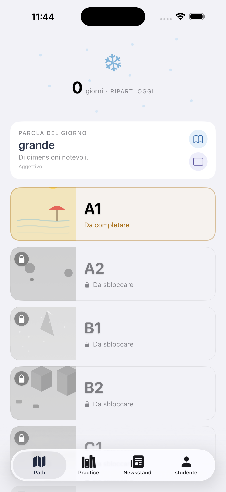
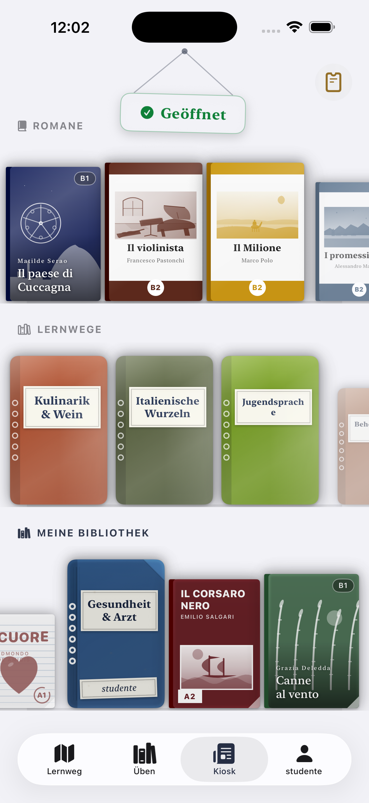
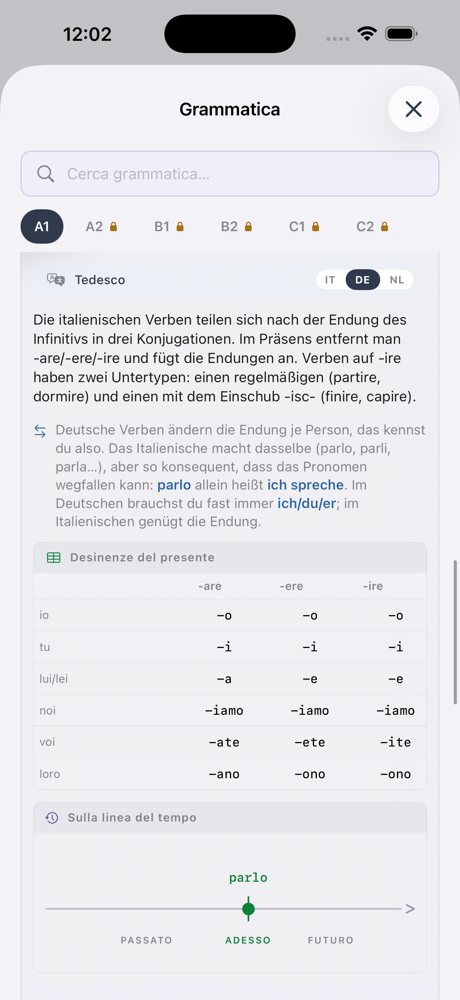
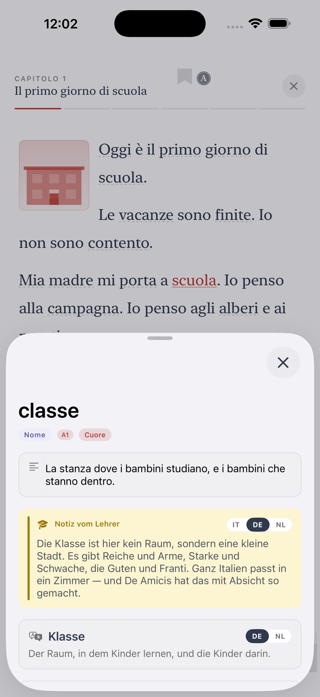
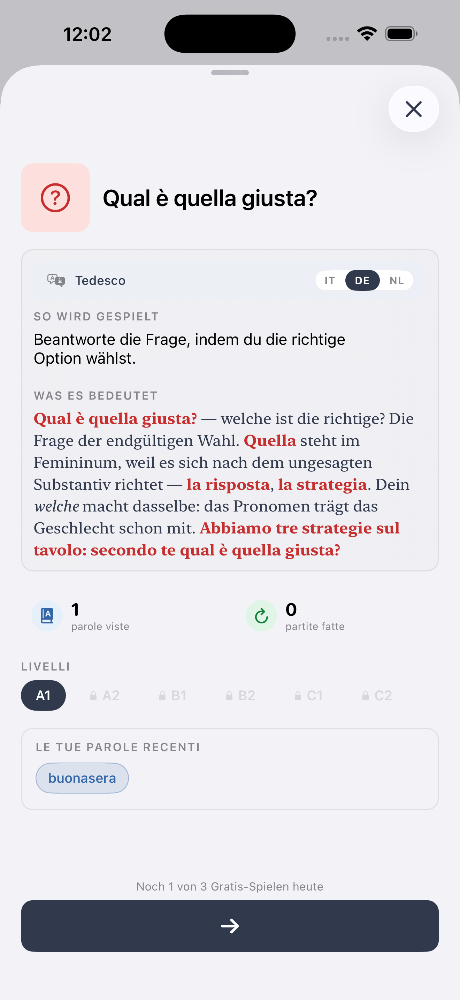
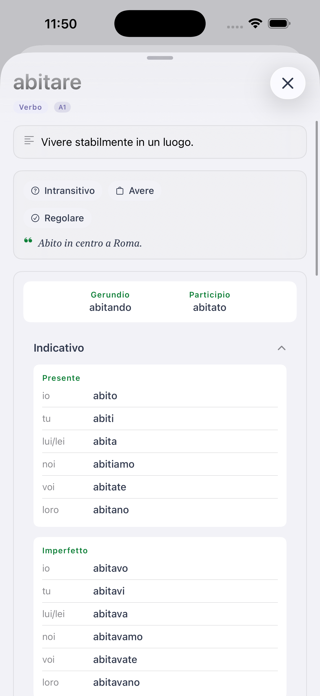

Ich liebe dich, lehre dich.
Italienisch lernen — vom ersten Wort bis Dante.
Ti ist die iOS-App für Ausländer und Migranten, die echtes Italienisch lernen wollen — das, das man auf der Post, im Café, beim Einbürgerungsgespräch spricht. Alles in deiner Sprache erklärt.
Warum Ti anders ist
Du hast sicher Duolingo probiert. Vielleicht Babbel. Die sind ok — für Touristen. Ti ist für den Menschen gebaut, der wirklich in Italien lebt (oder es plant).
Von einem echten Lehrer
Ti wurde von Alessio entworfen, einem Italienischlehrer mit jahrelanger Klassenraumerfahrung — nicht von einem Spielestudio.
GER ab Tag eins
Die sechs Stufen (A1 → C2) sind dieselben, die Universitäten, Arbeitgeber und der Einbürgerungstest verwenden.
Deine Sprache zuerst
Alle Erklärungen auf Deutsch, Arabisch, Chinesisch, Bengalisch, Filipino, Ukrainisch und 8 weiteren.
Was in Ti drin ist
GER-Lernpfad
Sechs Stufen, Dutzende Etappen. Wortschatz, Grammatik, Hören und Lesen auf einer klaren Karte.
Thematischer Kiosk
Echte Leseübungen: Kultur, Essen, Kino, Aktuelles — immer auf deinem Niveau.
Gestufte Klassiker
Lies Pirandello, Calvino und Manzoni in Adaptionen, die mit dir wachsen.
Wörterbuch in 14 Sprachen
Über 3.000 Wörter mit Übersetzungen, Beispielen und Muttersprachler-Audio.
Spiele und Übungen
Kreuzworträtsel, Zuordnungen, Diktate. Der langweilige Teil, spielbar gemacht.
Muttersprachler-Audio
Jedes Wort und jeder Dialog aufgenommen, damit du echtes Italienisch hörst.
Sechs Stufen, ein klarer Weg
Wo du auch anfängst, du weißt immer, was als Nächstes kommt.
Überleben
Kaffee bestellen, sich vorstellen, einfache Fragen stellen.
Zurechtkommen
Erledigungen, Formulare, Termine. Einbürgerungsniveau.
Bewältigen
Arbeit, Schule, Sozialleben auf Italienisch.
Diskutieren
Debattieren, erklären, Nachrichten und TV verstehen.
Nuancieren
Redewendungen, Register, Literatur, abstrakte Themen.
Beherrschen
Fast muttersprachlich. Dante, Verträge, Dialekte und Witze.
Häufige Fragen
Ist Ti kostenlos?
Du kannst kostenlos starten. Fortgeschrittene Stufen und einige Funktionen gehören zu einem Abo — monatlich, jährlich oder lebenslang.
Ist Ti gut für den italienischen Einbürgerungstest?
Ja. Das A2-Niveau (CILS) deckt Wortschatz und Grammatik ab.
Brauche ich Italienisch-Vorkenntnisse?
Nein. Starte bei A1. Alles wird zuerst auf Deutsch, dann auf Italienisch erklärt.
Welche Sprachen unterstützt Ti?
Vierzehn: Deutsch, Englisch, Spanisch, Französisch, Portugiesisch, Niederländisch, Rumänisch, Albanisch, Ukrainisch, Chinesisch, Arabisch, Filipino, Bengalisch, Tigrinya.
Ist es nur für Menschen in Italien?
Nein — funktioniert überall. Aber die Inhalte sind auf das echte Leben in Italien zugeschnitten.
See Ti in action
The CEFR path, exercises, edicola and graded Italian classics — from A1 to C2, in 14 languages.







